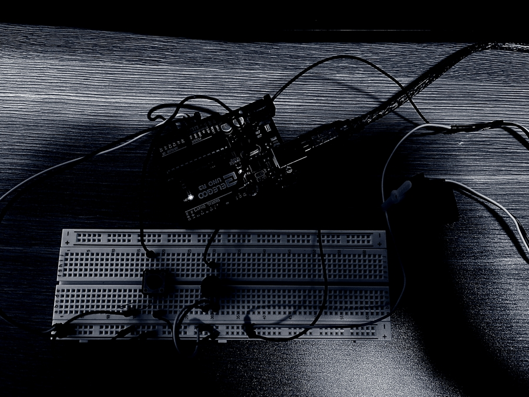
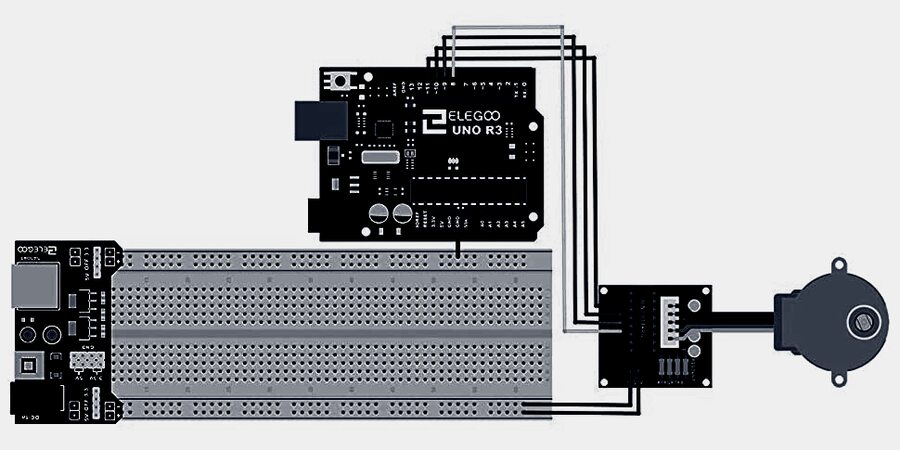
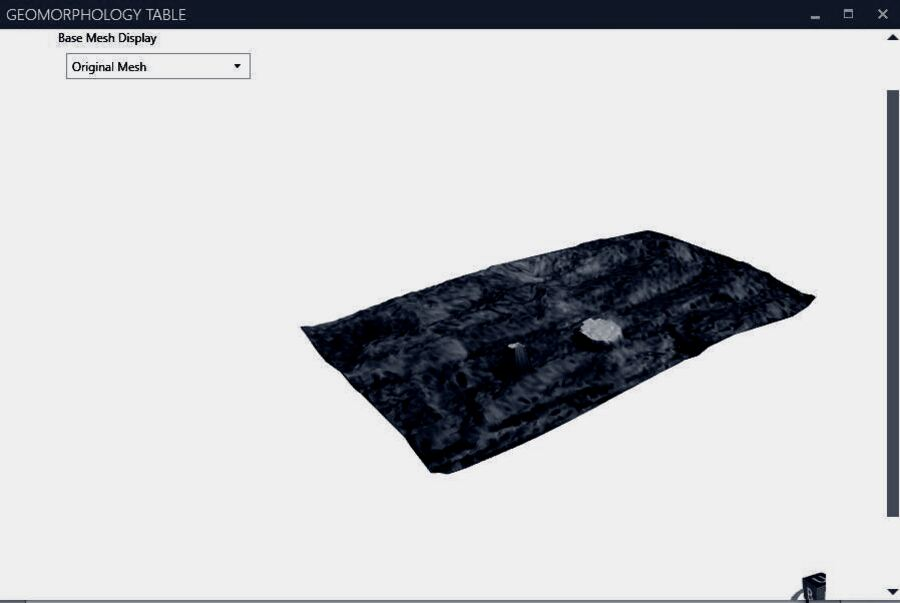

Instruments · Interfaces
The interface between technology, biology, and culture is collapsing, requiring a blurring of strategies to address nascent methods of sensing, processing, and prototyping (computational and physical). The course aims to introduce students to techniques of physical computing that can be used to develop design prototypes of tools that visualize and modify landscapes. Students will create physical prototypes that will engage scaled models (Geomorphology Table) or within the field at Milton Airfield. The first half of the semester will be a series of hands-on workshops to foster the skills necessary in data acquisition, electronics, and coding. The second half will be used to prototype and document projects working individually or in small groups. Previous experience with coding and physical computing is not necessary.“The focus will be on the production of knowledge through the process of making and documentation — requiring sustained iterative development and a curiosity to push the interface between landscape and technology.”



About the seminar
Responsive Landscapes: Instruments and Interfaces is a graduate seminar in responsive technologies in landscape architecture, taught in the Department of Landscape Architecture at the University of Virginia. The course introduces students to techniques of physical computing — sensing, processing, and prototyping — used to develop design prototypes of tools that visualize and modify landscapes.
Faculty: Bradley Cantrell (Chair and Professor of Landscape Architecture) and Xun Liu (Teaching Fellow / Lecturer, PhD Student in Landscape Architecture). Meeting: Monday 9:00–11:30.
This page documents the Spring 2021 and Spring 2022 offerings of the seminar. The 2021 offering ran as a hybrid seminar structured around three modules; the 2022 offering restructured the course into two modules — Sensing & Visualization and Prototyping.